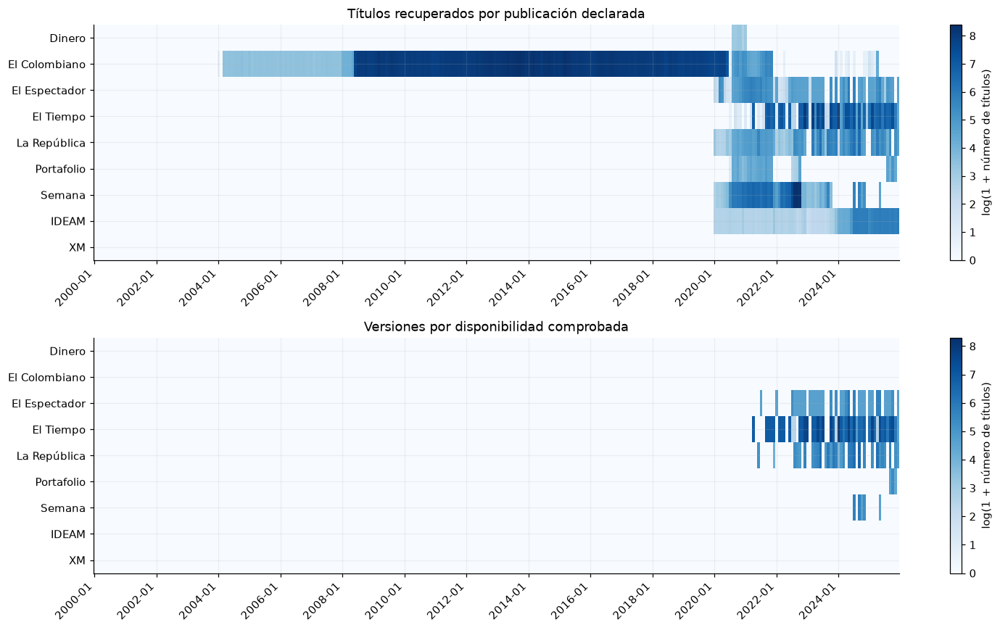
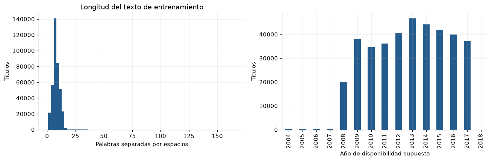
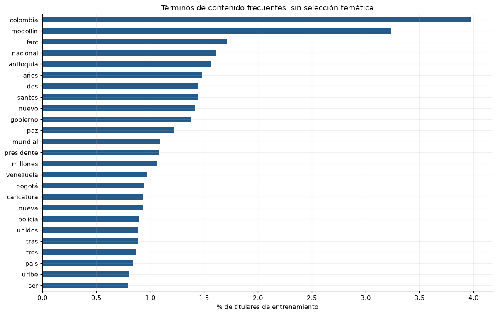
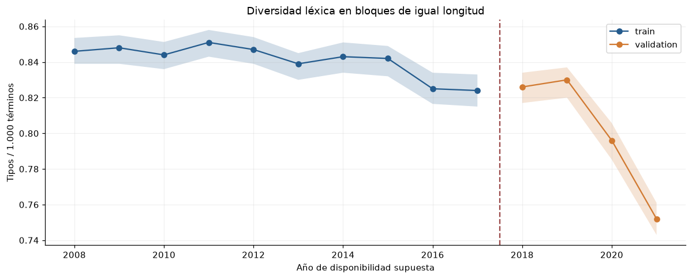
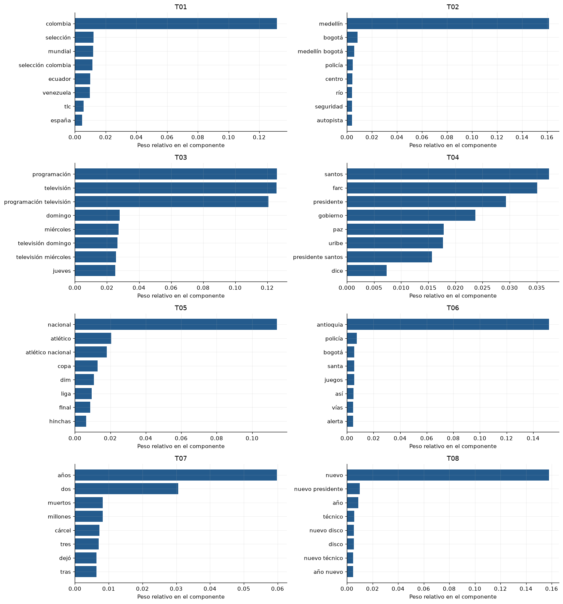
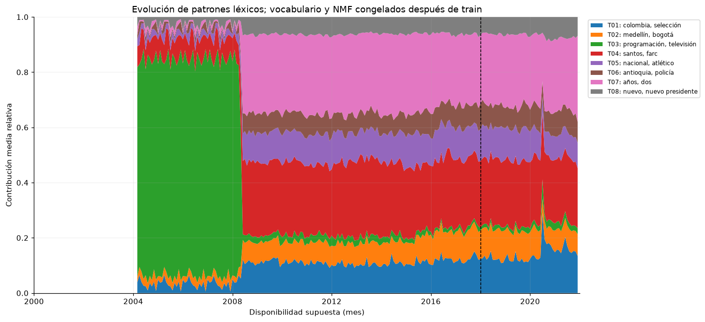
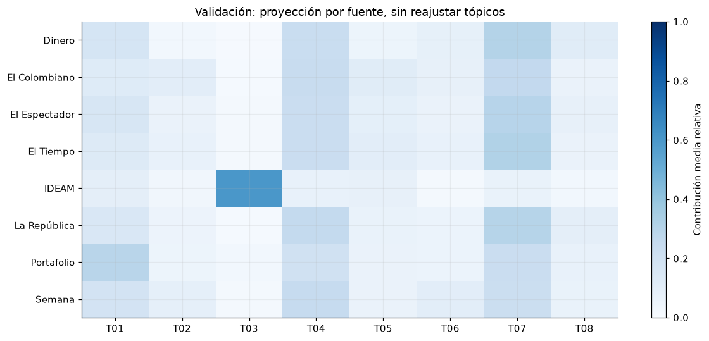
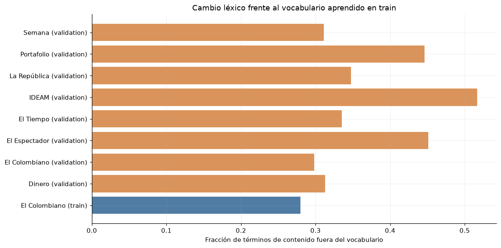

7. Texto: cobertura, duplicados y disponibilidad#
El análisis documental comprende cobertura por mes y fuente, repetición de titulares, diversidad léxica y tópicos obtenidos mediante aprendizaje no supervisado.
La disponibilidad temporal se representa mediante dos campos. available_at_assumed utiliza la fecha de publicación declarada y, cuando sólo consta el día, asigna disponibilidad desde las 00:00 del día siguiente en Colombia. available_at_verified identifica la disponibilidad respaldada por una captura de la versión exacta. Las versiones recuperadas retrospectivamente pueden contener revisiones posteriores; los registros sin fecha de publicación se conservan en el inventario documental.
Se examinan repeticiones exactas, variaciones ortográficas y similitud entre títulos asociados a una misma URL. La interpretación considera la periodicidad de los boletines y las convenciones editoriales de cada fuente.
%matplotlib inline
from pathlib import Path
ROOT = next(
directory for directory in [Path.cwd(), *Path.cwd().parents]
if (directory / "data/manifest.json").exists()
)
from sklearn.exceptions import ConvergenceWarning
from IPython.display import Markdown, display
from sklearn.decomposition import NMF
from types import SimpleNamespace
from sklearn.feature_extraction.text import TfidfVectorizer
import collections
from sklearn.metrics.pairwise import cosine_similarity
import hashlib
from scipy.spatial.distance import jensenshannon
import json
from scipy.optimize import linear_sum_assignment
import numpy as np
import pandas as pd
import matplotlib.pyplot as plt
import re
import time
import unicodedata
import warnings
CONFIG = dict(n_topics=8, max_features=20000, min_df=10, max_df=0.85, max_per_year=4000, max_fit_documents=50000, min_fit_content_terms=4, max_iter=250, tol=0.0001, seed=11037, stability_seed=11038, diversity_block_tokens=1000)
OUT = ROOT / 'results/headlines'
RESULTS = ROOT / 'results'
SPLITS = {'train': (2000, 2017), 'validation': (2018, 2021), 'test': (2022, 2025)}
STOPWORDS = set((ROOT / 'resources/spanish_stopwords.txt').read_text(encoding='utf-8').splitlines())
TOKEN = re.compile('(?u)\\b[^\\W\\d_]{3,}\\b')
RESULTS.mkdir(exist_ok=True)
(RESULTS / 'figures').mkdir(exist_ok=True)
(RESULTS / 'tables').mkdir(exist_ok=True)
plt.rcParams.update({'figure.figsize': (11, 4.4), 'figure.dpi': 110, 'savefig.dpi': 160, 'axes.spines.top': False, 'axes.spines.right': False, 'axes.grid': True, 'grid.alpha': 0.18, 'axes.prop_cycle': plt.cycler(color=['#245b8d', '#d17a32', '#2b8c77', '#8c5da8', '#9a4949'])})
OUT.mkdir(parents=True, exist_ok=True)
pd.set_option('display.max_rows', 35)
pd.set_option('display.max_columns', 14)
pd.set_option('display.float_format', lambda x: f'{x:.5g}')
def contributions(w, h):
"""Normalize reconstructed feature mass, resolving arbitrary NMF component scales."""
mass = w * h.sum(axis=1)[None, :]
total = mass.sum(axis=1)
return np.divide(mass, total[:, None], out=np.zeros_like(mass), where=total[:, None] > 0)
def dated_frame(raw, start, end):
"""No inventa fechas; asigna por disponibilidad supuesta, no por edición/año de archivo."""
keep = ['id', 'source', 'source_kind', 'title_kind', 'title_raw', 'url', 'available_at_assumed', 'quarantined']
frame = raw[keep].copy()
stamps = pd.to_datetime(frame['available_at_assumed'], utc=True, format='mixed', errors='coerce')
clean = frame['quarantined'].astype(str).isin(['0', 'False', 'false'])
selected = clean & stamps.ge(pd.Timestamp(start)) & stamps.lt(pd.Timestamp(end))
frame = frame.loc[selected].copy()
frame['available'] = stamps.loc[selected].dt.tz_convert('America/Bogota')
frame['year'] = frame['available'].dt.year
frame['month'] = frame['available'].dt.strftime('%Y-%m')
return frame.sort_values(['available', 'id']).reset_index(drop=True)
def load_text(split='train', kind=None):
if split == 'test':
raise PermissionError('El EDA no explora el contenido de prueba.')
a, b = SPLITS[split]
parts = []
for sub in [kind] if kind else ['press', 'official']:
for path in sorted((ROOT / f'data/text/{sub}').glob('*/*.csv.gz')):
if path.name[:4].isdigit() and a <= int(path.name[:4]) <= b:
parts.append(pd.read_csv(path, keep_default_na=False))
return pd.concat(parts, ignore_index=True) if parts else pd.DataFrame()
def metadata(name):
return json.loads((ROOT / 'data/metadata' / name).read_text(encoding='utf-8'))
def normalized(text):
return ' '.join(unicodedata.normalize('NFC', text).casefold().split())
def project_titles(frame):
results = []
h = study.model.components_
gram = h @ h.T
for left in range(0, len(frame), 10000):
x = study.vectorizer.transform(frame['title_raw'].iloc[left:left + 10000])
with warnings.catch_warnings(record=True) as notes:
warnings.simplefilter('always', ConvergenceWarning)
w = study.model.transform(x)
if notes:
study.transform_warning_count += len(notes)
weights = contributions(w, h)
represented = (np.asarray(x.getnnz(axis=1)).ravel() > 0) & (weights.sum(axis=1) > 0)
weights[~represented] = np.nan
xnorm = np.asarray(x.multiply(x).sum(axis=1)).ravel()
squared = np.maximum(xnorm - 2 * (w * np.asarray(x @ h.T)).sum(axis=1) + (w @ gram * w).sum(axis=1), 0)
error = np.divide(np.sqrt(squared), np.sqrt(xnorm), out=np.full(len(w), np.nan), where=xnorm > 0)
part = pd.DataFrame(weights, columns=list(study.labels.values()))
part['represented'] = represented
part['reconstruction_error'] = error
results.append(part)
return pd.concat(results, ignore_index=True)
def tokenize(text):
return [w for w in TOKEN.findall(unicodedata.normalize('NFC', text).casefold()) if w not in STOPWORDS]
def training_sample(frame, config=CONFIG):
"""Fit eligibility is checked here even if the caller accidentally mixes partitions."""
times = pd.to_datetime(frame['available'], utc=True)
if times.isna().any() or (times < pd.Timestamp('2000-01-01T00:00:00-05:00')).any() or (times >= pd.Timestamp('2018-01-01T00:00:00-05:00')).any():
raise ValueError('El ajuste de vocabulario/tópicos sólo admite entrenamiento anterior a 2018.')
fit = frame[frame['source_kind'] == 'news'].copy()
fit['normalized'] = fit['title_raw'].map(normalized)
fit = fit.drop_duplicates('normalized')
fit = fit[fit['title_raw'].map(lambda x: len(tokenize(x))) >= config['min_fit_content_terms']].copy()
fit['rank'] = fit['id'].map(lambda s: hashlib.sha256(s.encode()).hexdigest())
fit = fit.sort_values('rank').groupby('year', sort=True).head(config['max_per_year'])
return fit.sort_values('rank').head(config['max_fit_documents']).reset_index(drop=True)
coverage = pd.read_csv(ROOT / 'data/metadata/coverage_2000_2025_by_month_source.csv')
sources = metadata('coverage_summary.json')['selected_sources']
fig, axes = plt.subplots(2, 1, figsize=(14, 8))
for ax, col, title in [(axes[0], 'recovered_title_records_by_declared_publication_month', 'Títulos recuperados por publicación declarada'), (axes[1], 'verified_versions_by_capture_availability_month', 'Versiones por disponibilidad comprobada')]:
pivot = coverage.pivot(index='medium', columns='month', values=col).reindex(sources)
im = ax.imshow(np.log1p(pivot.to_numpy()), aspect='auto', cmap='Blues')
ax.set_yticks(range(len(sources)), sources)
ticks = np.arange(0, len(pivot.columns), 24)
ax.set_xticks(ticks, [pivot.columns[i] for i in ticks], rotation=45, ha='right')
ax.set_title(title)
fig.colorbar(im, ax=ax, label='log(1 + número de títulos)')
figure(fig, 'cobertura_texto_comparada')

text = load_text()
cut = pd.Timestamp('2018-01-01', tz='America/Bogota')
text['available_parsed'] = pd.to_datetime(text['available_at_assumed'], utc=True, format='mixed', errors='coerce')
text = text[(text['available_parsed'] < cut) & text['quarantined'].astype(str).isin(['0', 'False', 'false'])].copy()
text['caracteres'] = text['title_raw'].str.len()
text['palabras_espacio'] = text['title_raw'].str.split().str.len()
table(text.groupby('source')[['caracteres', 'palabras_espacio']].agg(['count', 'median', 'mean', 'max']), 'longitud_titulares_train')
| caracteres | palabras_espacio | |||||||
|---|---|---|---|---|---|---|---|---|
| count | median | mean | max | count | median | mean | max | |
| source | ||||||||
| El Colombiano | 380541 | 47 | 48.125 | 950 | 380541 | 8 | 8.0122 | 166 |
fig, axes = plt.subplots(1, 2, figsize=(12, 4))
axes[0].hist(text['palabras_espacio'], bins=70)
axes[0].set(xlabel='Palabras separadas por espacios', ylabel='Títulos', title='Longitud del texto de entrenamiento')
annual = text.groupby(text['available_parsed'].dt.year).size()
annual.plot(kind='bar', ax=axes[1])
axes[1].set(ylabel='Títulos', xlabel='Año de disponibilidad supuesta')
figure(fig, 'longitud_y_volumen_texto_train')

def normalized(value):
return ' '.join(unicodedata.normalize('NFC', value).casefold().split())
def orthographic(value):
value = ''.join((c for c in unicodedata.normalize('NFKD', value.casefold()) if not unicodedata.combining(c)))
return ' '.join(re.findall('\\w+', value))
exact = text['title_raw'].map(normalized)
near = text['title_raw'].map(orthographic)
report = pd.DataFrame({'n': [len(text), text['id'].duplicated().sum(), exact.duplicated().sum(), near.duplicated().sum(), text['canonical_url'].duplicated().sum(), (text['palabras_espacio'] <= 3).sum()]}, index=['textos fechados elegibles en train ampliado', 'id repetidos', 'titulares normalizados repetidos', 'coincidencias ignorando tildes/puntuación/caja', 'URL canónicas repetidas', 'textos de hasta 3 palabras'])
table(report, 'duplicados_textuales_train')
| n | |
|---|---|
| textos fechados elegibles en train ampliado | 380541 |
| id repetidos | 0 |
| titulares normalizados repetidos | 7925 |
| coincidencias ignorando tildes/puntuación/caja | 8149 |
| URL canónicas repetidas | 0 |
| textos de hasta 3 palabras | 21621 |
from difflib import SequenceMatcher
pairs = []
grouped = text[text['canonical_url'].duplicated(keep=False)].groupby('canonical_url')
for url, group in grouped:
titles = list(dict.fromkeys(group['title_raw']))
if len(titles) > 20:
continue
for i, a in enumerate(titles):
for b in titles[i + 1:]:
ratio = SequenceMatcher(None, orthographic(a), orthographic(b), autojunk=False).ratio()
if 0.9 <= ratio < 1:
pairs.append(dict(url_sha256=hashlib.sha256(url.encode()).hexdigest(), similitud_caracteres=ratio))
table(pd.DataFrame(pairs, columns=['url_sha256', 'similitud_caracteres']), 'casi_duplicados_misma_url_train')
| url_sha256 | similitud_caracteres |
|---|
La identificación de duplicados considera la URL, la fecha y la similitud ortográfica del titular. Los títulos periódicos se conservan para distinguir repetición editorial y duplicación de registros. El procedimiento cubre variaciones ortográficas dentro de una misma URL; la paráfrasis y la sindicación entre fuentes requieren evaluación semántica adicional.
summary = metadata('coverage_summary.json')
table(pd.DataFrame(summary['by_source']).T[['titles_all_period', 'titles_declared_2020_2025', 'titles_publication_date_unknown', 'versions_verified_available_by_end_2025', 'months_2020_2025_with_declared_titles', 'months_2020_2025_with_verified_availability']], 'cobertura_por_fuente')
| titles_all_period | titles_declared_2020_2025 | titles_publication_date_unknown | versions_verified_available_by_end_2025 | months_2020_2025_with_declared_titles | months_2020_2025_with_verified_availability | |
|---|---|---|---|---|---|---|
| Dinero | 129 | 129 | 0 | 0 | 6 | 0 |
| El Colombiano | 461461 | 15869 | 0 | 0 | 35 | 0 |
| El Espectador | 8550 | 8550 | 0 | 4697 | 64 | 33 |
| El Tiempo | 49350 | 49350 | 0 | 48323 | 61 | 46 |
| La República | 10381 | 10381 | 0 | 8162 | 67 | 31 |
| Portafolio | 1815 | 1815 | 0 | 391 | 25 | 3 |
| Semana | 29386 | 29386 | 0 | 999 | 51 | 5 |
| IDEAM | 7223 | 7223 | 0 | 0 | 72 | 0 |
| XM | 406 | 0 | 406 | 0 | 0 | 0 |
Implicaciones del análisis
Preprocesamiento: Conservar máscaras de recuperación/fuente y fechas supuestas/comprobadas. No rellenar texto ausente con un resumen generado.
Arquitectura: Encoder y mecanismo de utilidad entrenados con train; permitir que el modelo ignore texto corto/repetitivo. Agrupamiento, si se usa, se aprende dentro del pipeline.
Validación: Auditar cambios de fuente y cantidad de texto; comparar con/sin NLP en los mismos orígenes y con textos placebo en el benchmark futuro.
Riesgos: La variación temporal de cobertura y fuentes puede introducir asociaciones espurias. La recuperación retrospectiva limita la verificación de versiones históricas; los nombres de anexos e informes ofrecen menor especificidad documental que los titulares individuales.
7.1 Contenido, repetición y diversidad léxica#
Se calculan frecuencias de palabras y bigramas, longitud, repetición y características formales de los titulares. La normalización conserva tildes y eñes y excluye números y palabras funcionales mediante la lista de español de NLTK/Snowball, cuya fuente y huella se registran en el repositorio.
La diversidad léxica se compara mediante bloques de igual cantidad de términos. Entrenamiento y validación se analizan por separado. La asignación temporal utiliza la disponibilidad supuesta y considera los desplazamientos entre particiones producidos por la regla de ingreso al día siguiente.
study = SimpleNamespace()
raw_train = load_text('train')
study.train = dated_frame(raw_train, '2000-01-01T00:00:00-05:00', '2018-01-01T00:00:00-05:00')
carry = dated_frame(raw_train, '2018-01-01T00:00:00-05:00', '2022-01-01T00:00:00-05:00')
raw_validation = load_text('validation')
valid = dated_frame(raw_validation, '2018-01-01T00:00:00-05:00', '2022-01-01T00:00:00-05:00')
study.validation = pd.concat([carry, valid], ignore_index=True).drop_duplicates('id').sort_values(['available', 'id']).reset_index(drop=True)
study.fit = training_sample(study.train)
study.counters = {}
study.diagnostics = {}
study.weights = {}
rows = []
diversity = []
for split, frame in [('train', study.train), ('validation', study.validation)]:
overall = collections.Counter()
df = collections.Counter()
for text in frame['title_raw']:
words = tokenize(text)
overall.update(words)
df.update(set(words))
study.counters[split] = (overall, df)
lengths = frame['title_raw'].str.split().str.len()
rows.append(dict(particion=split, titulares=len(frame), mediana_palabras_originales=lengths.median(), terminos_contenido=sum(overall.values()), vocablos_distintos=len(overall), fraccion_titulo_normalizado_repetido=frame['title_raw'].map(normalized).duplicated().mean(), fraccion_con_cifras=frame['title_raw'].str.contains('\\d', regex=True).mean(), fraccion_con_interrogacion=frame['title_raw'].str.contains('?', regex=False).mean(), fraccion_sin_terminos_contenido=frame['title_raw'].map(lambda t: not tokenize(t)).mean()))
for year, group in frame.groupby('year'):
stream = []
blocks = []
for text in group.sort_values('id')['title_raw']:
stream.extend(tokenize(text))
while len(stream) >= CONFIG['diversity_block_tokens']:
words = stream[:CONFIG['diversity_block_tokens']]
stream = stream[CONFIG['diversity_block_tokens']:]
blocks.append(len(set(words)) / len(words))
diversity.append(dict(particion=split, anio=year, titulares=len(group), bloques_completos=len(blocks), diversidad_mediana=np.median(blocks) if blocks else np.nan, diversidad_q25=np.quantile(blocks, 0.25) if blocks else np.nan, diversidad_q75=np.quantile(blocks, 0.75) if blocks else np.nan))
table(pd.DataFrame(rows).set_index('particion'), 'titulares_resumen_linguistico')
| titulares | mediana_palabras_originales | terminos_contenido | vocablos_distintos | fraccion_titulo_normalizado_repetido | fraccion_con_cifras | fraccion_con_interrogacion | fraccion_sin_terminos_contenido | |
|---|---|---|---|---|---|---|---|---|
| particion | ||||||||
| train | 380541 | 8 | 1822919 | 72350 | 0.020826 | 0.14471 | 0.01522 | 0.00034162 |
| validation | 103748 | 9 | 567631 | 42215 | 0.061225 | 0.15936 | 0.052406 | 0.0016 |
counter, df = study.counters['train']
most = pd.DataFrame([dict(termino=w, apariciones=counter[w], titulares=df[w], porcentaje_titulares=100 * df[w] / len(study.train)) for w, _ in df.most_common(30)]).set_index('termino')
table(most.head(20), 'titulares_terminos_frecuentes_train')
| apariciones | titulares | porcentaje_titulares | |
|---|---|---|---|
| termino | |||
| colombia | 15141 | 15131 | 3.9762 |
| medellín | 12327 | 12318 | 3.237 |
| farc | 6511 | 6507 | 1.7099 |
| nacional | 6158 | 6147 | 1.6153 |
| antioquia | 5961 | 5958 | 1.5657 |
| años | 5667 | 5648 | 1.4842 |
| dos | 5565 | 5498 | 1.4448 |
| santos | 5492 | 5486 | 1.4416 |
| nuevo | 5402 | 5391 | 1.4167 |
| gobierno | 5238 | 5237 | 1.3762 |
| paz | 4670 | 4630 | 1.2167 |
| mundial | 4176 | 4171 | 1.0961 |
| presidente | 4128 | 4118 | 1.0821 |
| millones | 4033 | 4029 | 1.0588 |
| venezuela | 3704 | 3703 | 0.97309 |
| bogotá | 3602 | 3599 | 0.94576 |
| caricatura | 3547 | 3547 | 0.93209 |
| nueva | 3557 | 3547 | 0.93209 |
| policía | 3407 | 3403 | 0.89425 |
| unidos | 3397 | 3397 | 0.89268 |
fig, ax = plt.subplots(figsize=(11, 7))
most.head(25).iloc[::-1]['porcentaje_titulares'].plot.barh(ax=ax)
ax.set(xlabel='% de titulares de entrenamiento', ylabel='', title='Términos de contenido frecuentes: sin selección temática')
figure(fig, 'titulares_frecuencias_train')

diversity = pd.DataFrame(diversity)
table(diversity.set_index(['particion', 'anio']), 'titulares_diversidad_anual')
| titulares | bloques_completos | diversidad_mediana | diversidad_q25 | diversidad_q75 | ||
|---|---|---|---|---|---|---|
| particion | anio | |||||
| train | 2004 | 309 | 0 | NaN | NaN | NaN |
| 2005 | 364 | 0 | NaN | NaN | NaN | |
| 2006 | 361 | 0 | NaN | NaN | NaN | |
| 2007 | 360 | 0 | NaN | NaN | NaN | |
| 2008 | 20118 | 79 | 0.846 | 0.839 | 0.8535 | |
| 2009 | 38161 | 161 | 0.848 | 0.839 | 0.855 | |
| 2010 | 34622 | 148 | 0.844 | 0.836 | 0.85125 | |
| 2011 | 36129 | 163 | 0.851 | 0.843 | 0.858 | |
| 2012 | 40545 | 205 | 0.847 | 0.839 | 0.854 | |
| 2013 | 46676 | 245 | 0.839 | 0.83 | 0.845 | |
| 2014 | 44088 | 225 | 0.843 | 0.834 | 0.851 | |
| 2015 | 41851 | 209 | 0.842 | 0.832 | 0.849 | |
| 2016 | 39870 | 199 | 0.825 | 0.8165 | 0.834 | |
| 2017 | 37087 | 181 | 0.824 | 0.815 | 0.833 | |
| validation | 2018 | 34225 | 164 | 0.826 | 0.817 | 0.834 |
| 2019 | 30826 | 153 | 0.83 | 0.82 | 0.837 | |
| 2020 | 18929 | 106 | 0.796 | 0.78525 | 0.80575 | |
| 2021 | 19768 | 142 | 0.752 | 0.743 | 0.761 |
fig, ax = plt.subplots(figsize=(11, 4.5))
for split, group in diversity.groupby('particion', sort=False):
ax.plot(group['anio'], group['diversidad_mediana'], marker='o', label=split)
ax.fill_between(group['anio'], group['diversidad_q25'], group['diversidad_q75'], alpha=0.2)
ax.axvline(2017.5, color='#9a4949', ls='--')
ax.set(xlabel='Año de disponibilidad supuesta', ylabel='Tipos / 1.000 términos', title='Diversidad léxica en bloques de igual longitud')
ax.legend()
figure(fig, 'titulares_diversidad_anual')

Las bandas representan el rango intercuartílico de bloques de 1.000 términos. Se excluye el bloque incompleto de cada año y se conserva un orden determinista por identificador. La diversidad y las frecuencias caracterizan la composición léxica del archivo recuperado.
7.2 Tópicos aprendidos con TF-IDF y NMF#
El protocolo del análisis documental establece ocho componentes exploratorios. TF-IDF y los dos ajustes NMF se estiman con una muestra determinista de prensa de entrenamiento, deduplicada y limitada por año. Las frecuencias y las proyecciones agregadas conservan todas las observaciones elegibles; por tanto, su ponderación anual difiere de la muestra de ajuste.
Los componentes se identifican mediante códigos T01, T02, etc., acompañados por sus términos de mayor peso. La estabilidad se evalúa con una segunda semilla, similitud coseno y emparejamiento óptimo. Los ejemplos de entrenamiento se seleccionan por similitud con cada componente para facilitar su interpretación.
La representación sigue el procedimiento de extracción de tópicos mediante TF-IDF y NMF documentado por scikit-learn.
start = time.perf_counter()
(OUT / 'protocol.json').write_text(json.dumps(CONFIG, indent=2), encoding='utf-8')
study.vectorizer = TfidfVectorizer(tokenizer=tokenize, token_pattern=None, lowercase=False, ngram_range=(1, 2), min_df=CONFIG['min_df'], max_df=CONFIG['max_df'], max_features=CONFIG['max_features'], sublinear_tf=True)
study.x_fit = study.vectorizer.fit_transform(study.fit['title_raw'])
study.features = study.vectorizer.get_feature_names_out()
def fit_model(seed):
model = NMF(n_components=CONFIG['n_topics'], init='nndsvdar', solver='cd', beta_loss='frobenius', max_iter=CONFIG['max_iter'], tol=CONFIG['tol'], random_state=seed)
with warnings.catch_warnings(record=True) as notes:
warnings.simplefilter('always', ConvergenceWarning)
w = model.fit_transform(study.x_fit)
return (model, w, [str(n.message) for n in notes if issubclass(n.category, ConvergenceWarning)])
study.model, study.w_fit, notes = fit_model(CONFIG['seed'])
second, _, notes2 = fit_model(CONFIG['stability_seed'])
similarity = cosine_similarity(study.model.components_, second.components_)
left, right = linear_sum_assignment(-similarity)
study.stability = dict(zip(left, similarity[left, right]))
study.labels = {i: f'T{i + 1:02d}' for i in range(CONFIG['n_topics'])}
study.terms = {i: study.features[np.argsort(h)[::-1][:10]].tolist() for i, h in enumerate(study.model.components_)}
fit_ids = '\n'.join(sorted(study.fit['id']))
study.fit_audit = dict(configuration=CONFIG, fit_split='train', validation_fit_documents=0, test_documents_read=0, raw_train_documents=len(study.train), fit_documents=len(study.fit), fit_min_available=str(study.fit['available'].min()), fit_max_available=str(study.fit['available'].max()), fit_ids_sha256=hashlib.sha256(fit_ids.encode()).hexdigest(), features=len(study.features), first_iterations=study.model.n_iter_, second_iterations=second.n_iter_, first_convergence_warnings=notes, second_convergence_warnings=notes2, relative_frobenius_error=study.model.reconstruction_err_ / np.sqrt(study.x_fit.multiply(study.x_fit).sum()), stability_mean_cosine=float(similarity[left, right].mean()), seconds=time.perf_counter() - start, E1_numeric_only=True, raw_dataset_modified=False)
(OUT / 'fit_audit.json').write_text(json.dumps(study.fit_audit, ensure_ascii=False, indent=2), encoding='utf-8')
(OUT / 'vocabulary.json').write_text(json.dumps(study.features.tolist(), ensure_ascii=False), encoding='utf-8')
np.savez_compressed(OUT / 'nmf_components.npz', components=study.model.components_)
np.savez_compressed(OUT / 'tfidf_idf.npz', idf=study.vectorizer.idf_)
table(study.fit.groupby(['year', 'source']).size().rename('titulares_para_ajuste').to_frame(), 'titulares_muestra_ajuste_train')
| titulares_para_ajuste | ||
|---|---|---|
| year | source | |
| 2008 | El Colombiano | 4000 |
| 2009 | El Colombiano | 4000 |
| 2010 | El Colombiano | 4000 |
| 2011 | El Colombiano | 4000 |
| 2012 | El Colombiano | 4000 |
| 2013 | El Colombiano | 4000 |
| 2014 | El Colombiano | 4000 |
| 2015 | El Colombiano | 4000 |
| 2016 | El Colombiano | 4000 |
| 2017 | El Colombiano | 4000 |
table(pd.DataFrame([dict(topico=study.labels[i], terminos=' · '.join(study.terms[i]), coseno_otra_semilla=study.stability[i]) for i in range(CONFIG['n_topics'])]).set_index('topico'), 'titulares_topicos_terminos_estabilidad')
| terminos | coseno_otra_semilla | |
|---|---|---|
| topico | ||
| T01 | colombia · selección · mundial · selección col... | 0.99998 |
| T02 | medellín · bogotá · medellín bogotá · policía ... | 0.99997 |
| T03 | programación · televisión · programación telev... | 1 |
| T04 | santos · farc · presidente · gobierno · paz · ... | 0.79184 |
| T05 | nacional · atlético · atlético nacional · copa... | 0.99996 |
| T06 | antioquia · policía · bogotá · santa · juegos ... | 0.022443 |
| T07 | años · dos · muertos · millones · cárcel · tre... | 0.84896 |
| T08 | nuevo · nuevo presidente · año · técnico · nue... | 0.99994 |
fig, axes = plt.subplots(4, 2, figsize=(14, 15))
for i, ax in enumerate(axes.flat):
h = study.model.components_[i]
idx = np.argsort(h)[-8:]
ax.barh(study.features[idx], h[idx] / h.sum())
ax.set(title=study.labels[i], xlabel='Peso relativo en el componente')
ax.tick_params(axis='y', labelsize=10)
figure(fig, 'titulares_topicos_nmf')

El ajuste utilizó 40,000 titulares distintos de entrenamiento y 4,823 características. Error relativo de reconstrucción TF-IDF: 0.988. Similitud coseno media entre componentes emparejados de dos semillas: 0.833. Estas medidas resumen la capacidad de reconstrucción y la reproducibilidad de los componentes.
weakest = min(study.stability, key=study.stability.get)
display(Markdown(f"La muestra de ajuste cubre **{study.fit['available'].min().date()} a {study.fit['available'].max().date()}**. El componente menos estable es **{study.labels[weakest]}**, con coseno **{study.stability[weakest]:.3f}**. El residuo conserva **{100 * study.fit_audit['relative_frobenius_error'] ** 2:.1f} %** de la energía cuadrática TF-IDF original: la energía residual cuantifica la información TF-IDF que permanece fuera de la aproximación de ocho componentes."))
La muestra de ajuste cubre 2008-05-22 a 2017-12-31. El componente menos estable es T06, con coseno 0.022. El residuo conserva 97.6 % de la energía cuadrática TF-IDF original: la energía residual cuantifica la información TF-IDF que permanece fuera de la aproximación de ocho componentes.
if notes or notes2:
display(Markdown('**Convergencia:** ' + str(notes + notes2) + ' Se conserva el ajuste aproximado y su límite de iteraciones; no se selecciona otra configuración por sus resultados.'))
df = np.asarray(study.x_fit.getnnz(axis=0)).ravel()
bigrams = [i for i, t in enumerate(study.features) if ' ' in t]
idx = sorted(bigrams, key=lambda i: df[i], reverse=True)[:25]
table(pd.DataFrame({'bigrama': study.features[idx], 'titulares_en_muestra_ajuste': df[idx]}).set_index('bigrama'), 'titulares_bigramas_train')
| titulares_en_muestra_ajuste | |
|---|---|
| bigrama | |
| programación televisión | 242 |
| real madrid | 172 |
| presidente santos | 162 |
| selección colombia | 106 |
| millones dólares | 99 |
| proceso paz | 92 |
| atlético nacional | 88 |
| nueva york | 87 |
| papa francisco | 85 |
| presidente uribe | 83 |
| américa latina | 74 |
| james rodríguez | 72 |
| copa américa | 69 |
| corte suprema | 68 |
| álvaro uribe | 65 |
| donald trump | 62 |
| mil millones | 62 |
| juan manuel | 61 |
| millones pesos | 61 |
| valle aburrá | 54 |
| nairo quintana | 53 |
| fin semana | 51 |
| cristiano ronaldo | 50 |
| once caldas | 50 |
| años cárcel | 48 |
sim = np.asarray(study.x_fit @ study.model.components_.T) / np.maximum(np.linalg.norm(study.model.components_, axis=1), 1e-12)
sample_weights = contributions(study.w_fit, study.model.components_)
examples = []
for i in range(CONFIG['n_topics']):
candidates = np.flatnonzero(sample_weights.argmax(axis=1) == i)
selected = candidates[np.argsort(sim[candidates, i])[::-1][:3]]
for j in selected:
r = study.fit.iloc[j]
examples.append(dict(topico=study.labels[i], fecha=str(r['available'].date()), fuente=r['source'], titular=r['title_raw'], coseno=float(sim[j, i]), id=r['id'], url=r['url']))
ex = pd.DataFrame(examples)
ex.to_csv(OUT / 'training_topic_examples.csv', index=False)
with pd.option_context('display.max_colwidth', 100):
display(ex[['topico', 'fecha', 'fuente', 'titular', 'coseno']])
| topico | fecha | fuente | titular | coseno | |
|---|---|---|---|---|---|
| 0 | T01 | 2008-10-09 | El Colombiano | Colombia elimina depósito a endeudamiento externo | 0.9617 |
| 1 | T01 | 2016-12-12 | El Colombiano | Libranzas en Colombia, se liquida Elite | 0.9617 |
| 2 | T01 | 2017-05-02 | El Colombiano | Mincomercio multó a Booking Colombia | 0.9617 |
| 3 | T02 | 2013-06-05 | El Colombiano | Huecos y andenes deteriorados en Medellín | 0.98258 |
| 4 | T02 | 2014-06-06 | El Colombiano | Cerrados duelos de clavados en E.U. y Medellín | 0.98258 |
| 5 | T02 | 2009-04-20 | El Colombiano | Sirenaica descubre talentos en Medellín | 0.98258 |
| 6 | T03 | 2009-07-27 | El Colombiano | Programación de televisión pars este martes, 28 de julio | 0.72943 |
| 7 | T03 | 2011-05-02 | El Colombiano | Programación de televisión, martes 3 de amyo | 0.72901 |
| 8 | T03 | 2010-01-17 | El Colombiano | Programación de televisión para estes, lunes 18 de enero | 0.72264 |
| 9 | T04 | 2013-04-29 | El Colombiano | La paz incierta del presidente Santos | 0.637 |
| 10 | T04 | 2011-04-16 | El Colombiano | Presidente Santos aclaró que no existen peleas con Uribe | 0.63494 |
| 11 | T04 | 2011-07-20 | El Colombiano | Presidente Santos instaló periodo legislativo | 0.59756 |
| 12 | T05 | 2014-01-03 | El Colombiano | El Complejo Laudo Natel será el búnker nacional | 0.92199 |
| 13 | T05 | 2013-02-24 | El Colombiano | Los 5 males estructurales de la caficultura nacional | 0.92199 |
| 14 | T05 | 2014-11-17 | El Colombiano | Las pifias defensivas castigaron a Nacional | 0.92199 |
| 15 | T06 | 2013-11-14 | El Colombiano | Restablecida la expedición de pasaportes en Antioquia | 0.97678 |
| 16 | T06 | 2011-09-29 | El Colombiano | Comfamiliar Camacol se fusionará con Comfenalco Antioquia | 0.97678 |
| 17 | T06 | 2009-09-10 | El Colombiano | Coqueteo australiano con Antioquia y Asomineros | 0.97678 |
| 18 | T07 | 2017-03-25 | El Colombiano | Albania entierra 45 años de comunismo | 0.78393 |
| 19 | T07 | 2014-05-04 | El Colombiano | Hello Kitty ya es una gatita de 40 años | 0.78393 |
| 20 | T07 | 2014-10-18 | El Colombiano | Los 75 años acuáticos se nadaron con abrazos | 0.78393 |
| 21 | T08 | 2008-06-27 | El Colombiano | En Llanogrande nuevo almacén de Yamaha | 0.97697 |
| 22 | T08 | 2016-04-11 | El Colombiano | Nuevo tipo de planetas cuya atmósfera se evaporó | 0.97697 |
| 23 | T08 | 2009-11-02 | El Colombiano | El diploma y la toga tienen un nuevo requisito: Ecaes | 0.97697 |
7.3 Evolución temporal y composición por fuente#
Los titulares de entrenamiento y validación se proyectan con vocabulario, IDF y componentes fijos. Los pesos se normalizan por la masa reconstruida para corregir la indeterminación de escala de NMF y expresar contribuciones relativas.
Los documentos sin representación reciben pesos ausentes y se contabilizan por separado. Las medias se calculan sobre documentos representados y se acompañan de su cobertura. Los intervalos mensuales sin registros corresponden a vacíos en la recuperación documental.
study.transform_warning_count = 0
summary = []
all_months = []
labels = list(study.labels.values())
for split, frame in [('train', study.train), ('validation', study.validation)]:
result = project_titles(frame)
study.weights[split] = result
w = result[labels].to_numpy()
entropy = -np.nansum(np.where(w > 0, w * np.log(np.maximum(w, 1e-15)), 0), axis=1) / np.log(CONFIG['n_topics'])
entropy[~result['represented']] = np.nan
result['entropy'] = entropy
summary.append(dict(particion=split, titulares=len(frame), fraccion_sin_representacion=1 - result['represented'].mean(), maxima_contribucion_media=result[labels].max(axis=1).mean(), entropia_normalizada_media=np.nanmean(entropy), error_reconstruccion_medio=result['reconstruction_error'].mean()))
joined = pd.concat([frame[['month', 'source', 'source_kind']].reset_index(drop=True), result], axis=1)
monthly = joined.groupby('month')[labels].mean()
monthly['particion'] = split
monthly['titulares_totales'] = joined.groupby('month').size()
monthly['titulares_representados'] = joined.groupby('month')['represented'].sum()
all_months.append(monthly)
by_source = joined.groupby(['source_kind', 'source'])[labels + ['represented', 'entropy', 'reconstruction_error']].mean()
table(by_source, 'titulares_topicos_por_fuente_' + split)
table(pd.DataFrame(summary).set_index('particion'), 'titulares_topicos_resumen')
| T01 | T02 | T03 | T04 | T05 | T06 | T07 | T08 | represented | entropy | reconstruction_error | ||
|---|---|---|---|---|---|---|---|---|---|---|---|---|
| source_kind | source | |||||||||||
| news | El Colombiano | 0.11128 | 0.082318 | 0.023866 | 0.26069 | 0.10795 | 0.071566 | 0.28033 | 0.06199 | 0.95026 | 0.51906 | 0.98587 |
| T01 | T02 | T03 | T04 | T05 | T06 | T07 | T08 | represented | entropy | reconstruction_error | ||
|---|---|---|---|---|---|---|---|---|---|---|---|---|
| source_kind | source | |||||||||||
| news | Dinero | 0.17149 | 0.029183 | 0.0078845 | 0.23237 | 0.054059 | 0.0856 | 0.3057 | 0.11371 | 1 | 0.56983 | 0.99352 |
| El Colombiano | 0.12274 | 0.10326 | 0.014373 | 0.23929 | 0.11516 | 0.081729 | 0.25947 | 0.063967 | 0.9296 | 0.51975 | 0.98377 | |
| El Espectador | 0.15814 | 0.064149 | 0.017628 | 0.22678 | 0.093393 | 0.064946 | 0.29623 | 0.07873 | 0.97972 | 0.57615 | 0.98978 | |
| El Tiempo | 0.12639 | 0.073153 | 0.016224 | 0.22926 | 0.10387 | 0.071248 | 0.31485 | 0.065002 | 0.97952 | 0.57703 | 0.99091 | |
| La República | 0.15204 | 0.058468 | 0.013548 | 0.25399 | 0.067788 | 0.0622 | 0.2971 | 0.094857 | 0.9836 | 0.64322 | 0.9952 | |
| Portafolio | 0.29004 | 0.053157 | 0.029071 | 0.19591 | 0.06264 | 0.062333 | 0.23014 | 0.076712 | 0.98901 | 0.55049 | 0.98162 | |
| Semana | 0.18184 | 0.088531 | 0.022582 | 0.248 | 0.065444 | 0.10459 | 0.22162 | 0.067388 | 0.99773 | 0.64864 | 0.99184 | |
| official_report | IDEAM | 0.097369 | 0.033669 | 0.60003 | 0.072456 | 0.079355 | 0.020344 | 0.066581 | 0.030197 | 0.59211 | 0.49207 | 0.99556 |
| titulares | fraccion_sin_representacion | maxima_contribucion_media | entropia_normalizada_media | error_reconstruccion_medio | |
|---|---|---|---|---|---|
| particion | |||||
| train | 380541 | 0.049742 | 0.59097 | 0.51906 | 0.98587 |
| validation | 103748 | 0.058488 | 0.57324 | 0.54131 | 0.98546 |
timeline = pd.concat(all_months).sort_index()
table(timeline, 'titulares_topicos_evolucion_mensual')
| T01 | T02 | T03 | T04 | T05 | T06 | T07 | T08 | particion | titulares_totales | titulares_representados | |
|---|---|---|---|---|---|---|---|---|---|---|---|
| month | |||||||||||
| 2004-01 | 0.046647 | 0.011201 | 0 | 0.0014562 | 0.1516 | 0.10251 | 0.3487 | 0.33789 | train | 1 | 1 |
| 2004-03 | 0.039676 | 0.019255 | 0.75907 | 0.075626 | 0.025831 | 0.015003 | 0.030759 | 0.034775 | train | 31 | 30 |
| 2004-04 | 0.065555 | 0.028857 | 0.73409 | 0.070253 | 0.045996 | 0.038453 | 0.0063198 | 0.01048 | train | 29 | 29 |
| 2004-05 | 0.040117 | 0.037749 | 0.76828 | 0.1139 | 0.017064 | 0.0072482 | 0.0043419 | 0.011292 | train | 31 | 31 |
| 2004-06 | 0.026457 | 0.024145 | 0.83368 | 0.068544 | 0.024 | 0.006156 | 0.00724 | 0.0097759 | train | 30 | 30 |
| ... | ... | ... | ... | ... | ... | ... | ... | ... | ... | ... | ... |
| 2021-08 | 0.15033 | 0.081345 | 0.021046 | 0.2398 | 0.08028 | 0.098658 | 0.25151 | 0.077039 | validation | 1285 | 1272 |
| 2021-09 | 0.14542 | 0.078352 | 0.019308 | 0.24136 | 0.087593 | 0.087232 | 0.2652 | 0.075532 | validation | 2593 | 2563 |
| 2021-10 | 0.15229 | 0.074773 | 0.018513 | 0.2282 | 0.089621 | 0.079547 | 0.28777 | 0.069288 | validation | 2452 | 2417 |
| 2021-11 | 0.15089 | 0.073742 | 0.018284 | 0.23299 | 0.089593 | 0.085025 | 0.27348 | 0.075995 | validation | 2125 | 2102 |
| 2021-12 | 0.1346 | 0.078717 | 0.021269 | 0.21796 | 0.091908 | 0.076043 | 0.31096 | 0.068544 | validation | 1251 | 1223 |
215 rows × 11 columns
complete = pd.period_range('2000-01', '2021-12', freq='M').astype(str)
timeline = timeline.reindex(complete)
dates = pd.to_datetime(timeline.index + '-01')
fig, ax = plt.subplots(figsize=(13, 6))
colors = plt.get_cmap('tab10').colors[:8]
ax.stackplot(dates, *[timeline[t].to_numpy() for t in labels], colors=colors, labels=[study.labels[i] + ': ' + ', '.join(study.terms[i][:2]) for i in range(CONFIG['n_topics'])])
ax.axvline(pd.Timestamp('2018-01-01'), color='black', ls='--', lw=1)
ax.set(xlabel='Disponibilidad supuesta (mes)', ylabel='Contribución media relativa', ylim=(0, 1), title='Evolución de patrones léxicos; vocabulario y NMF congelados después de train')
ax.set_xlim(pd.Timestamp('2000-01-01'), pd.Timestamp('2022-01-01'))
ax.legend(loc='upper left', bbox_to_anchor=(1.01, 1), fontsize=8)
figure(fig, 'titulares_topicos_evolucion')

validation = pd.concat([study.validation[['source', 'source_kind']].reset_index(drop=True), study.weights['validation']], axis=1)
means = validation.groupby('source')[labels].mean()
fig, ax = plt.subplots(figsize=(11, 5))
im = ax.imshow(means, aspect='auto', vmin=0, vmax=1, cmap='Blues')
ax.set_yticks(range(len(means)), means.index)
ax.set_xticks(range(8), labels)
ax.set_title('Validación: proyección por fuente, sin reajustar tópicos')
fig.colorbar(im, ax=ax, label='Contribución media relativa')
figure(fig, 'titulares_topicos_validacion_fuente')

Los espacios sin cobertura mensual corresponden a registros no recuperados. Los pesos expresan contribuciones relativas de NMF. Las medias se calculan sobre documentos representados y se acompañan de su cobertura. Las variaciones reflejan conjuntamente contenido, periodo, fuente y características formales del titular.
7.4 Cambio del vocabulario y limitaciones#
El desplazamiento léxico se evalúa mediante la fracción de términos externos al vocabulario de entrenamiento y la divergencia entre distribuciones de frecuencias. Los términos externos incluyen tanto vocablos nuevos como palabras excluidas por los umbrales de frecuencia.
La evolución de los componentes combina variaciones de contenido, composición editorial y recuperación del archivo. El predominio de El Colombiano en entrenamiento condiciona la representación aprendida y su transferencia a otras fuentes. La interpretación de los tópicos se circunscribe a las características del corpus recuperado.
known = {t for t in study.features if ' ' not in t}
unigrams = sorted(known)
distributions = {}
rows = []
for split, frame in [('train', study.train), ('validation', study.validation)]:
counter, _ = study.counters[split]
outside = sum((n for w, n in counter.items() if w not in known))
total = sum(counter.values())
vector = np.array([counter[w] for w in unigrams] + [outside], dtype=float)
distributions[split] = vector / vector.sum()
rows.append(dict(particion=split, terminos=total, terminos_fuera_vocabulario=outside, fraccion_fuera_vocabulario=outside / total))
lexical_js = float(jensenshannon(distributions['train'], distributions['validation'], base=2) ** 2)
table(pd.DataFrame(rows).set_index('particion'), 'titulares_cobertura_vocabulario')
| terminos | terminos_fuera_vocabulario | fraccion_fuera_vocabulario | |
|---|---|---|---|
| particion | |||
| train | 1822919 | 509437 | 0.27946 |
| validation | 567631 | 177917 | 0.31344 |
compare = []
for split, frame in [('train', study.train), ('validation', study.validation)]:
for source, group in frame.groupby('source'):
counter = collections.Counter((w for t in group['title_raw'] for w in tokenize(t)))
n = sum(counter.values())
compare.append(dict(particion=split, fuente=source, titulares=len(group), terminos=n, fraccion_fuera_vocabulario=sum((v for w, v in counter.items() if w not in known)) / n if n else np.nan))
by_source = pd.DataFrame(compare)
table(by_source.set_index(['particion', 'fuente']), 'titulares_vocabulario_por_fuente')
| titulares | terminos | fraccion_fuera_vocabulario | ||
|---|---|---|---|---|
| particion | fuente | |||
| train | El Colombiano | 380541 | 1822919 | 0.27946 |
| validation | Dinero | 129 | 1043 | 0.31256 |
| El Colombiano | 80822 | 404045 | 0.2984 | |
| El Espectador | 3896 | 27633 | 0.45102 | |
| El Tiempo | 4980 | 29098 | 0.33514 | |
| IDEAM | 304 | 660 | 0.51667 | |
| La República | 2195 | 16727 | 0.34758 | |
| Portafolio | 1274 | 8470 | 0.44628 | |
| Semana | 10148 | 79955 | 0.3111 |
fig, ax = plt.subplots(figsize=(11, 5.5))
for split, group in by_source.groupby('particion', sort=False):
ax.barh(group['fuente'] + ' (' + split + ')', group['fraccion_fuera_vocabulario'], label=split, alpha=0.8)
ax.set(xlabel='Fracción de términos de contenido fuera del vocabulario', title='Cambio léxico frente al vocabulario aprendido en train')
figure(fig, 'titulares_cobertura_vocabulario_fuente')

audit = dict(study.fit_audit, lexical_JS_divergence_bits=lexical_js, transform_convergence_warning_count=study.transform_warning_count, frames={k: len(v) for k, v in [('train', study.train), ('validation', study.validation)]}, topic_assignments_are_EDA_only=True, manual_topic_names=False, numeric_or_price_data_read=False)
(OUT / 'analysis_audit.json').write_text(json.dumps(audit, ensure_ascii=False, indent=2), encoding='utf-8')
display(Markdown(f'La divergencia Jensen–Shannon entre las frecuencias léxicas de train y validación, en el vocabulario fijo y una casilla externa, es **{lexical_js:.4f} bits**. Se interpreta como una medida descriptiva con valores entre 0 y 1. La categoría externa agrupa términos nuevos y términos excluidos por las reglas de frecuencia.'))
La divergencia Jensen–Shannon entre las frecuencias léxicas de train y validación, en el vocabulario fijo y una casilla externa, es 0.0448 bits. Se interpreta como una medida descriptiva con valores entre 0 y 1. La categoría externa agrupa términos nuevos y términos excluidos por las reglas de frecuencia.
Implicaciones del análisis
Preprocesamiento: Conservar calidad, repetición y términos no representados; si se usa texto en una fase posterior, ajustar su vocabulario y agrupamiento sólo con train.
Arquitectura: La representación por tópicos permite examinar la composición documental y su variación entre fuentes y periodos.
Validación: Proyectar validación con vocabulario, IDF y componentes estimados en entrenamiento; mantener fijo el número de componentes del protocolo.
Riesgos: El predominio editorial de una fuente y la incertidumbre sobre las versiones históricas condicionan la interpretación y transferencia de los componentes.